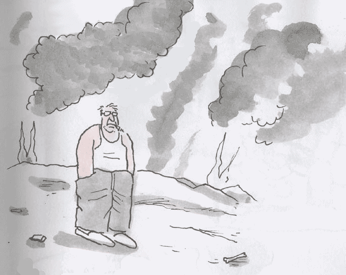
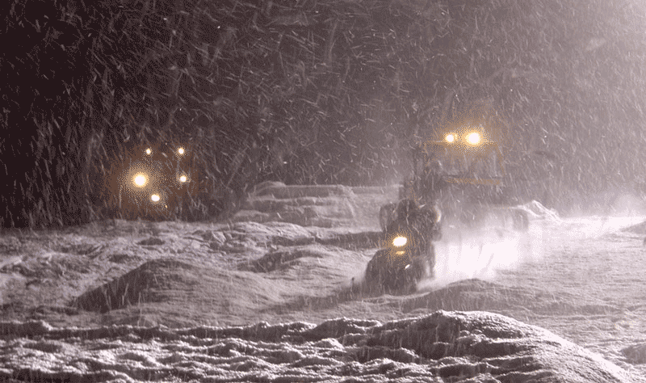

And
you think the comet that wiped out the dinosaurs was quite something? Well --
it was peanuts, really. Some hundreds of millions of years earlier, a volcano did a much
more thorough killing. And the bad thing is: the next supervolcano is about to
go boom.
No-one
really knows what sparked off the event. But according to the leading theory, the
killer didn't come from outer space -- but from below, from
underneath what is now Siberia. There, a disproportional big volcano popped
up. It spewed out enough lava and gas to blow up the planet's climate and
reset evolution.
Now there's volcanoes and VOLCANOES. In 1783, the Laki volcano in Iceland erupted, belching up almost five cubic kilometers of super hot lava. Nine thousand people perished on the spot, eighty percent of all livestock was killed, a quarter of Iceland's population was killed in the aftermath, and dust blocking the Sun pushed down temperatures several degrees on the entire northern hemisphere. Now, that's what a geologist would call a small volcano, a pimple popping open, really.
How
different it was 65 million years earlier, when a volcano made a mess of what
is now India. For several centuries in a row, the volcano pumped up something
like 400,000 cubic kilometers of molten rock -- the Iceland eruption 100,000
times over! Some scientists still blame the volcano, and not the comet, for
the extinction of the dino's.
Obviously,
supervolcanoes can be, well, a little problematic. Ordinary volcanoes
just pinch a tunnel in the Earth's crust. But a supervolcano is a completely
different thing. A supervolcano is what happens when pressure builds up in an
underground lake of magma. A supervolcano is much like a high-pressure balloon
full of lava exploding. When it erupts, it really ERUPTS.
|  |
|
- 'Well... Fancied it would be worse than this' (Cartoon copyright Exit Mundi/Matthias Giessen) |
So,
we'd run away, right? Hmm. If only it was that easy. An even bigger
problem than the lava itself is the ash. 64,000 Years ago, a supervolcano made
a mess of what is now the US. Of the current 50 states, 21 were covered with a
layer of ash, at some places was over twenty meters thick!
Well, who cares, you might think - we'd just dust it away. But it isn't that
simple. Volcanic ash is not like the ash you find on the barbecue: it is made
of tiny pieces of rock. If it falls on your roof, your house can collapse
under it's weight. If it gets into contact with cars or airplanes, they will
break down or crash. Even worse, if you inhale it, the ash will mix with the
liquids in your lungs and form a cement-like substance. You'll literally drown
in conrete!
So you'd take a boat to another continent, right?
Wrong. Apart from lava,
volcanoes spew out a deadly brew of toxic chemicals. There are sulphurous
gases that turn all rainfall into a blistering downpour of pure sulphuric acid
for years to come. There are all kinds of chlorine-bearing compounds, that
break down enough of
the ozone layer to turn the Sun into a real killer. There's carbon dioxide,
the greenhouse gas that not only nibbles at the ozone layer, but also causes
long-term global warming. And last but not least, there's soot. A super
eruption will darken the Sun, and gradually push the Earth into nuclear
winter. For many years, or even centuries, we will have to survive in
darkness and cold.
Ok, we may be smart enough to escape from the lava and the ash, dodge the acid rains, survive the nuclear winter and protect ourselves against the killer solar radiation afterwards. But plants and animals definitely are not. We'd find ourselves in an increasingly empty world, as one species after another goes extinct. In the end, even the toughest survivalist would starve to death.
|  |
|
|
In
fact, 74,000 years ago, humanity almost did. In those days, a supervolcano
erupted in Toba, Sumatra. Quite a lot of scientists believe this is what
pushed humanity to the brink of extinction: it is a well-established fact that
in those days, humanity suddenly was reduced to a slim total of some ten thousands
of men.
Alright
-- but that was a long time ago, you might argue. Well, here's some bad news.
Geologists agree that another supervolcano will definitely show up sometime
somewhere in the future. It's a bit inconvenient no one knows where it will
happen -- or when.
But
that's not even the worst part. If you still want to have a good
night's sleep tonight, better stop reading here. For actually, the next
Magmageddon is due to arrive any day now.
At
this very moment, a
well-known supervolcano broods its ugly plans right under beautiful
Yellowstone Park. On average, the Yellowstone supervolcano erupts once every
600,000 years - but the last time it erupted was 640,000 years ago. Oh, and by the way: in parts of Yellowstone
Park,
the ground has gone up seventy centimeters during the last century. Also, a
lake has flooded,
A
consequence of some innocent magma flowing from one place to another? No one
really knows. It seems the stage is set for a very nasty surprise.
 |
 |